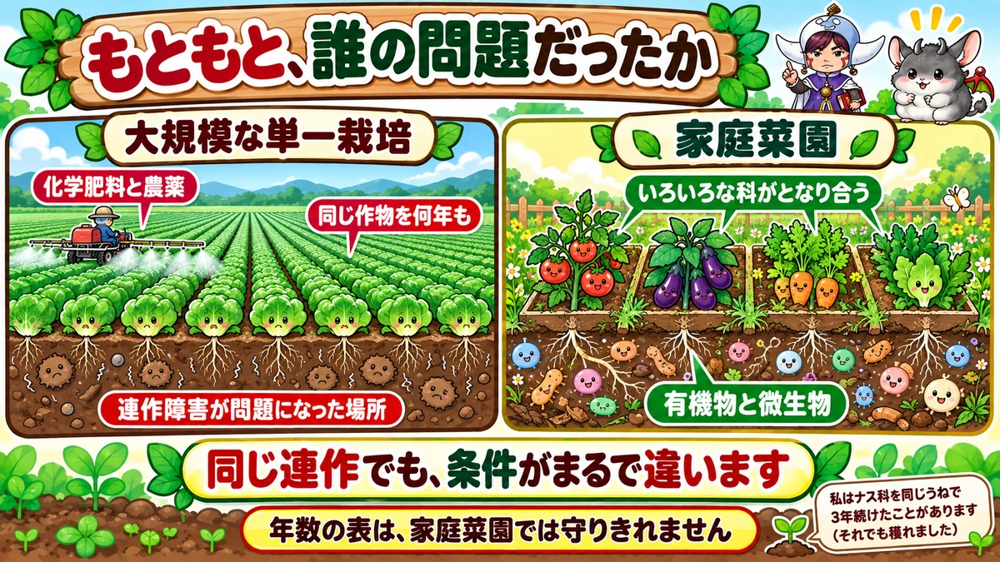
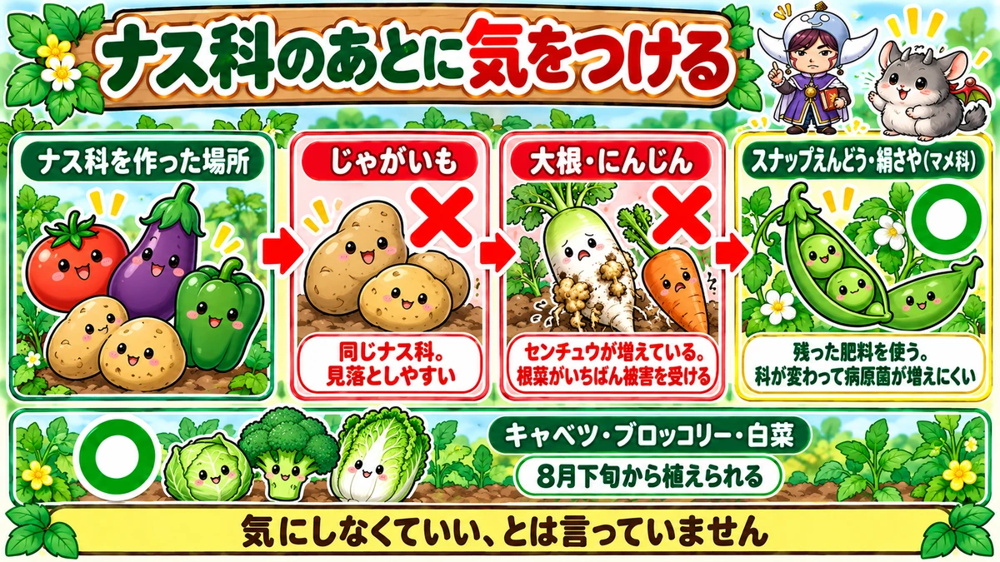
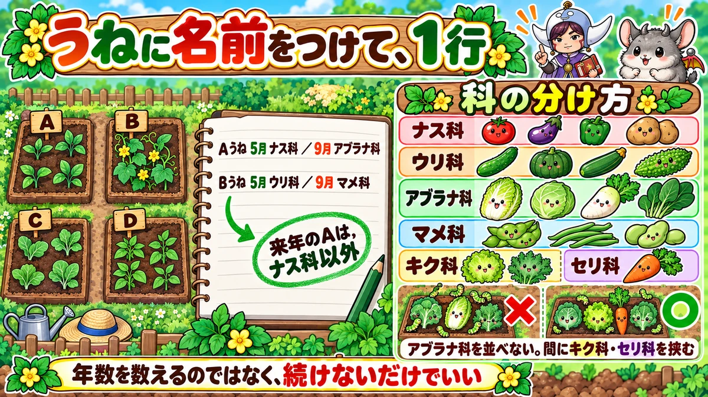

連作障害は、表を覚えなくていい🌱 記録するのは「科」だけ
🌱「連作障害が怖くて、去年と同じ場所に植えられない」
🌱「何年あけるのか、調べるたびに数字が違う」
🌱「そもそも去年ここに何を植えたか、覚えていない」
どうも、8150（えいこう）です🌱 家庭菜園歴8年、理科の教員免許を持っていて、有機・無農薬で野菜を育てています。
前回はゴーヤでした。今日は野菜そのものではなく、★植える場所の話です。
これまでの記事で、私は毎回こう書いてきました。「ウリ科なので、同じ場所は2〜3年あける」と。
読みながら「そんなに畑が広くない」と思われた方、多いはずです。
先に、この記事でいちばん言いたいことを言っておきますね。
★あの年数は、守れなくても大丈夫です。
かわりに★1つだけやってください。「前に何科を作ったか」を記録することです🌱
連作障害とは、何なのか
2つのことが起きています
同じ野菜を、同じ場所で作り続ける。すると育ちが悪くなる。これが連作障害です。
中身は★大きく2つです。
- ★土の栄養が偏る … 同じ野菜は、同じ養分ばかり吸います
- ★病原菌や虫が増える … その野菜を好むものが、そこに住みつきます
よく見る目安
一般的にはこう言われます。
- ★マメ科 … 4〜5年あける
- ★ナス科 … 3〜4年あける
- ★ウリ科 … 2〜3年あける
- ★アブラナ科 … 1〜2年あける
私も記事に書いてきました。★でも、ここで手が止まりますよね。
★この表は、守りきれません
人気の野菜が、集中しています
考えてみてください。
★ナス科は、トマト・なす・ピーマン・じゃがいも。
★マメ科は、枝豆・いんげん・落花生・そら豆・えんどう。
★家庭菜園でいちばん作りたい野菜が、この2つに固まっています。
これを3〜5年ずつ避けようとしたら、★毎年作れる野菜がどんどん減っていきます。
うちの畑では、無理でした
私の畑は、うねが4本です。
★4本でナス科を4年あけるということは、1年に1本しかナス科を植えられない計算になります。
トマトもなすもピーマンも作りたいのに、です。★2年目で計画が破綻しました😅
★そこまで怖がらなくていい理由

もともと、誰の問題だったか
ここが大事なところです。
★連作障害が大問題になったのは、大規模な農業の話からです。
同じ作物を、広い畑いっぱいに、何年も。★化学肥料と農薬でそれを続けたときに、はっきり出てきた問題でした。
家庭菜園は、前提が違います
ところが、家庭菜園はそうなっていません。
- ★同じ場所に、いろいろな科の野菜が並んでいる
- ★面積が小さく、まわりに雑草や他の植物がある
- ★有機物を入れて、微生物のいる土を作っている
★条件がまるで違うわけです。
だから★「必ず出る」ものとして構えなくていい、と私は思っています。
私の実感
正直に書きます。
★私はナス科を、同じうねで3年続けたことがあります。
結果は、育ちました。★3年目に少し実つきが落ちた気はしましたが、収穫できないような事態にはなりませんでした。
これは私の畑での話です。★保証はできません。でも「絶対にだめ」ではない、とは言えます。
★ただし、これは避けてください

気にしなくていい、とは言っていません
ここを誤解しないでください。★はっきり相性の悪い組み合わせはあります。
私が実際に避けているのは、この2つです。
❶ ナス科の後に、じゃがいも
★じゃがいもはナス科です。
トマト・なす・ピーマンを作った場所に、そのまま植えるのは★同じ科を続けることになります。
意外と見落とされます。★じゃがいもだけ別枠で考えている方が多いんですね。
❷ ナス科の後に、大根やにんじん
これが★いちばん実害の出る組み合わせです。
ナス科を作った土では、★センチュウという小さな生きものが増えていることがあります。
そして★センチュウの被害がいちばんはっきり出るのが、大根やにんじんなどの根菜です。
★根にこぶができて、まっすぐ育ちません。せっかく育てても、抜いたときにがっかりします。
逆に、相性のいい後作
ナス科の後に何を植えるか。★おすすめはマメ科です。
理由が2つあります。
- ★なすやトマトが吸いきれなかった肥料分を、マメ科が使ってくれる
- ★科が変わるので、土の中の病原菌が増えにくくなる
★秋ならスナップえんどうや絹さやです。ナス科を片づけた後に、そのまま流れます。
★キャベツ・ブロッコリー・白菜も良い後作です。8月下旬から植えられます。
★やることは、記録だけです

覚えるのは、科の分け方だけ
年数の表は、覚えなくていいです。★覚えるのは科の分け方だけにしてください。
- ★ナス科 … トマト・なす・ピーマン・じゃがいも・ししとう
- ★ウリ科 … きゅうり・かぼちゃ・ズッキーニ・すいか・ゴーヤ
- ★アブラナ科 … 白菜・キャベツ・ブロッコリー・大根・かぶ・小松菜
- ★マメ科 … 枝豆・いんげん・落花生・そら豆・えんどう
- ★キク科 … レタス・春菊・ごぼう
- ★セリ科 … にんじん・パセリ・セロリ
- ★ヒガンバナ科 … 玉ねぎ・ねぎ・にんにく
- ★イネ科 … とうもろこし
- ★アオイ科 … オクラ
- ★ヒユ科 … ほうれん草
うねに、名前をつける
私がやっているのは、これだけです。
★うねにA・B・C・Dと名前をつけて、ノートに「Aうね：5月ナス科／9月アブラナ科」と書く。
たった1行です。★次の年、そのノートを見て「Aは去年ナス科だから、今年はウリ科かマメ科」と決めます。
★年数を数えるのではなく、続けないようにするだけ。これで十分回ります。
前回までの記事で栽培日誌の話をしましたが、★書くのはこの1行からで構いません。
アブラナ科を、並べない
もうひとつ、実用的なコツを。
★アブラナ科ばかりを隣どうしに並べると、虫が集まります。
白菜・キャベツ・ブロッコリー・小松菜。★どれも同じ虫に好かれるので、まとめて植えると全部やられます。
★間にレタスや春菊（キク科）、にんじん（セリ科）を挟んでください。
これは輪作とは別の話ですが、★効果はすぐ出ます。私はこれで青虫の量がはっきり減りました。
小さい畑ほど、回してください
畑が狭いと「回しようがない」と思いがちです。
でも★狭い畑ほど、季節で回せます。
★じゃがいも（春）→ モロヘイヤ（夏）→ ミニ大根（秋）。
これで1年に3回、しかも★毎回ちがう科です。同じ場所を使いながら、輪作になっています。
学ぶ：土は、自分で立て直します🔬
病原菌が増えると、どうなるか
ここからが面白いところです。
同じ野菜を作り続けると、その病原菌が増えます。★ここまでは想像どおりですよね。
では、そのまま増え続けるのでしょうか。
★増えません。
増えると、抑えるものが現れます
病原菌が増えると、★それを抑える微生物が土の中で増えてきます。
エサが増えれば、それを食べるものが集まる。当たり前といえば当たり前です。
★結果として、病気が出にくくなっていくことがあります。
これは★発病衰退（はつびょうすいたい）と呼ばれる現象で、研究でも報告されています。
虫でも、同じことが起きます
畑の虫を思い浮かべてください。
★害虫が増えると、それを食べる天敵も増えます。てんとう虫、クモ、カマキリ。
そして★畑にいる虫の大半は、害虫でも天敵でもない「ただの虫」です。
★害虫だけが増え続ける畑、というのは、実は不自然な状態なんですね。
だから、土づくりのほうが効きます
ここが結論です。
★微生物がたくさんいる土は、自分でバランスを取り戻します。
年数の表とにらめっこするより、★落ち葉や堆肥を入れて、微生物の住める土にするほうがずっと効きます。
★連作障害を防ぐいちばんの方法は、実は土づくりです☺️
まとめ
ここまで読んでくださって、ありがとうございます！
- ★連作障害＝栄養の偏りと、病害虫の増加
- ★年数の目安はあるが、家庭菜園では守りきれない
- ★もともと大規模な単一栽培で問題になったもの
- ★少量多品目の畑は、前提が違う
- ★ただしナス科の後のじゃがいもは避ける
- ★ナス科の後の大根・にんじんも避ける（センチュウ）
- ★ナス科の後はマメ科が良い（残った肥料を使う）
- ★キャベツ・ブロッコリー・白菜も良い後作
- ★覚えるのは年数ではなく、科の分け方
- ★うねに名前をつけて、1行だけ記録する
- ★「続けない」だけで十分
- ★アブラナ科を隣どうしに並べない
- ★間にキク科・セリ科を挟むと虫が減る
- ★狭い畑は、季節で3回まわす
- ★病原菌が増えると、それを抑える微生物も増える
- ★いちばん効くのは、微生物の住める土づくり
全部やろうとしなくて大丈夫です。まずは★うねに名前をつけて、今なにを植えているか1行書いてみてください。来年の自分が助かります🌱
次回は、タネまきの話です。★深さと水で、発芽率が変わる理由をお話しします🌱
えん麦（緑肥）
作るものがない時期に畑を空けておくより、緑肥をまいて根を張らせるほうが土が締まりません。刈って敷けばそのまま有機物になります。
![[商品価格に関しましては、リンクが作成された時点と現時点で情報が変更されている場合がございます。]](https://hbb.afl.rakuten.co.jp/hgb/56d21de3.ae31fd42.56d21de4.bc885a0a/?me_id=1381384&item_id=10000017&pc=https%3A%2F%2Fthumbnail.image.rakuten.co.jp%2F%400_mall%2Fyohonsha%2Fcabinet%2F10419213%2Fcompass1768461115.jpg%3F_ex%3D240x240&s=240x240&t=picttext "[商品価格に関しましては、リンクが作成された時点と現時点で情報が変更されている場合がございます。]")

米ぬか
土の中の微生物を増やすのに、いちばん手軽な材料です。入れすぎると虫が湧くので、うすく広くが基本です。
![[商品価格に関しましては、リンクが作成された時点と現時点で情報が変更されている場合がございます。]](https://hbb.afl.rakuten.co.jp/hgb/56d21cb1.eebb183f.56d21cb2.51de80a8/?me_id=1247635&item_id=10000021&pc=https%3A%2F%2Fthumbnail.image.rakuten.co.jp%2F%400_mall%2Feco-hiryo%2Fcabinet%2Fitem6%2Fset-1-a1.jpg%3F_ex%3D240x240&s=240x240&t=picttext "[商品価格に関しましては、リンクが作成された時点と現時点で情報が変更されている場合がございます。]")
マリーゴールド
根に来る線虫を減らすといわれる花です。うねの端に植えておくだけなので、場所をとりません。見た目も明るくなります。
![[商品価格に関しましては、リンクが作成された時点と現時点で情報が変更されている場合がございます。]](https://hbb.afl.rakuten.co.jp/hgb/552615f0.9cc2855e.552615f1.776f7de9/?me_id=1251188&item_id=10001783&pc=https%3A%2F%2Fthumbnail.image.rakuten.co.jp%2F%400_mall%2Fyonezawa%2Fcabinet%2Fhanatane01%2Fhanaharumaki1%2Fhitoezakikongou.jpg%3F_ex%3D240x240&s=240x240&t=picttext "[商品価格に関しましては、リンクが作成された時点と現時点で情報が変更されている場合がございます。]")
あわせて読みたい